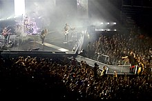

|  |
Imagine Dragons interpretó «It's Time» en vivo en The Tonight Show con Jay Leno (2012), Jimmy Kimmel Live! (2012), Late Night con Jimmy Fallon (2012), y Conan (2013). De igual manera interpretaron «Radioactive» en vivo en Jimmy Kimmel Live! (2012), The Late Show con David Letterman (2013), The Tonight Show con Jay Leno (2013), Late Night con Jimmy Fallon (2013) y en los MTV Europe Music Awards (2013). También se presentaron en Good Morning America (2013), (2015). La banda realizó un show exclusivo para la sexta temporada final de la serie de televisión Live from the Artists Den (2013). La banda también actuó en los premios American Music Awards de 2013, MTV Europa Music Awards (2013), Grammy Awards (2014), Saturday Night Live (2014), en los Billboard Music Awards (2014) y MuchMusic Video Awards (2014). También encabezaron el concierto All-Star Target de la MLB (2014) y la inauguración del Festival Made In America Music en Los Ángeles. Imagine Dragons cantó una versión de «Revolution» en The Night That Changed America: A Grammy Salute to The Beatles. (2014).
El 24 de octubre de 2013, Imagine Dragons fueron los invitados especiales y protagonizaron un episodio de Impractical Jokers de TruTV, donde los perdedores, Joe y Sal, tuvieron que actuar como "Señora Lanza" en un concierto lleno en Nikon at Jones Beach Theat. Los miembros de la banda se unieron a Murr y Q en los hijinks.
La banda también ha interpretado «I Bet My Life» en los American Music Awards de 2014, y The Ellen DeGeneres Show (2015). También se han presentado con «Shots» en The Tonight Show Starring Jimmy Fallon (2015), Jimmy Kimmel Live! (2015), y The Ellen DeGeneres Show (2015).
Imagine Dragons apareció en el primer episodio de la serie de 2015, Los Muppets, donde interpretaron parte de la canción «Roots» Además, el compositor Hans Zimmer ocupó parte del sonido de la canción «I'm So Sorry» para crear el tema del villano Kai de la película Kung Fu Panda 3.

|

|

|

|

|